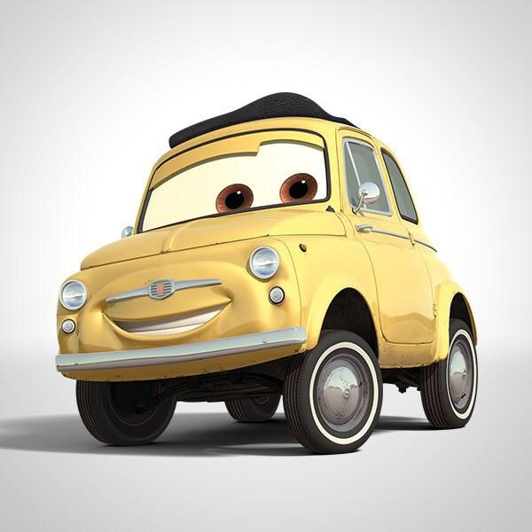
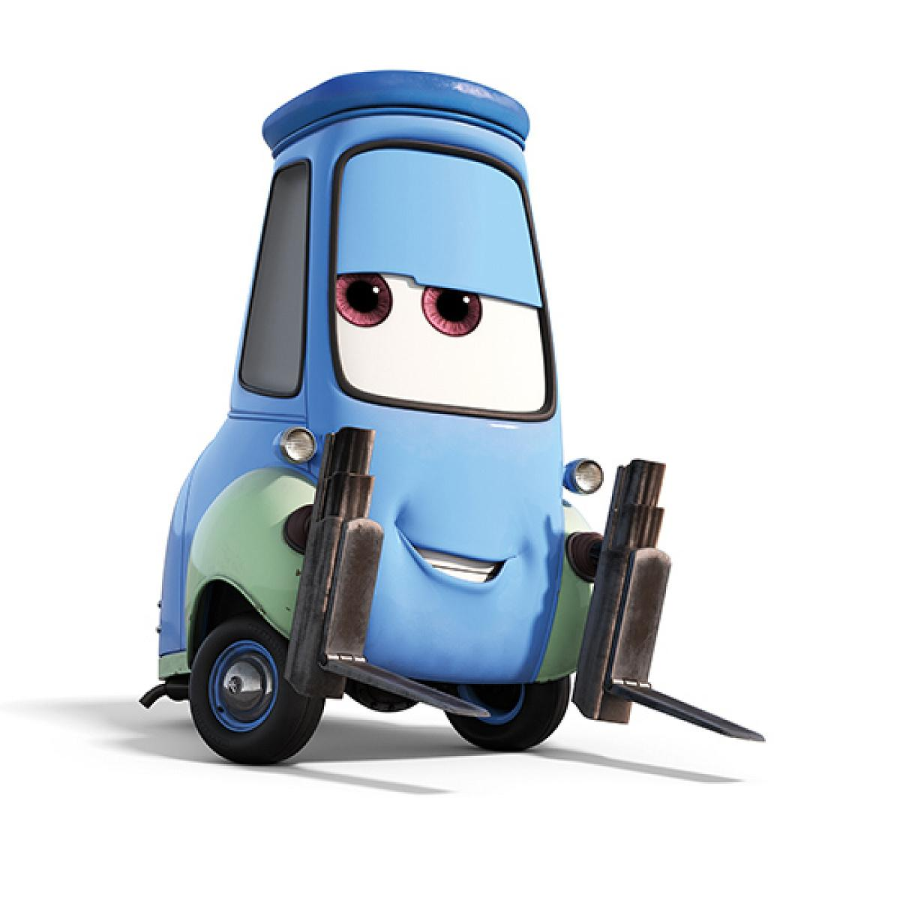
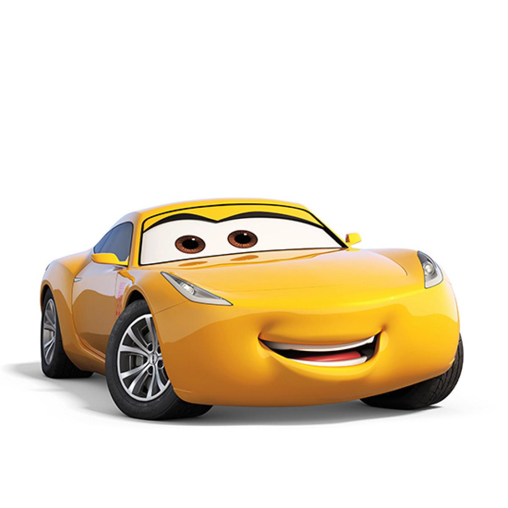
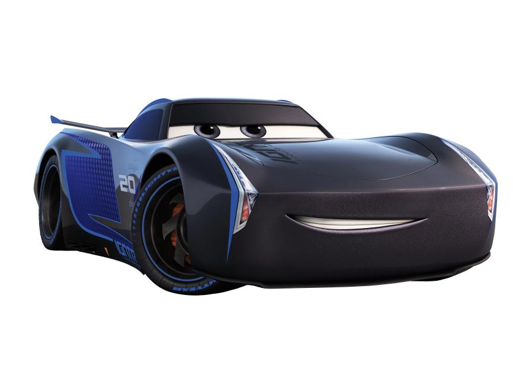
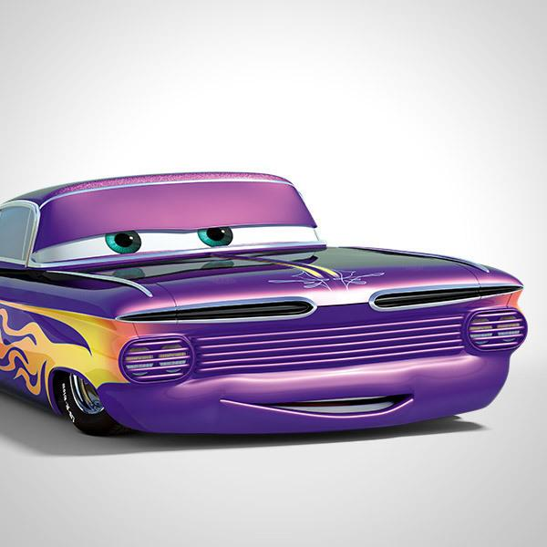
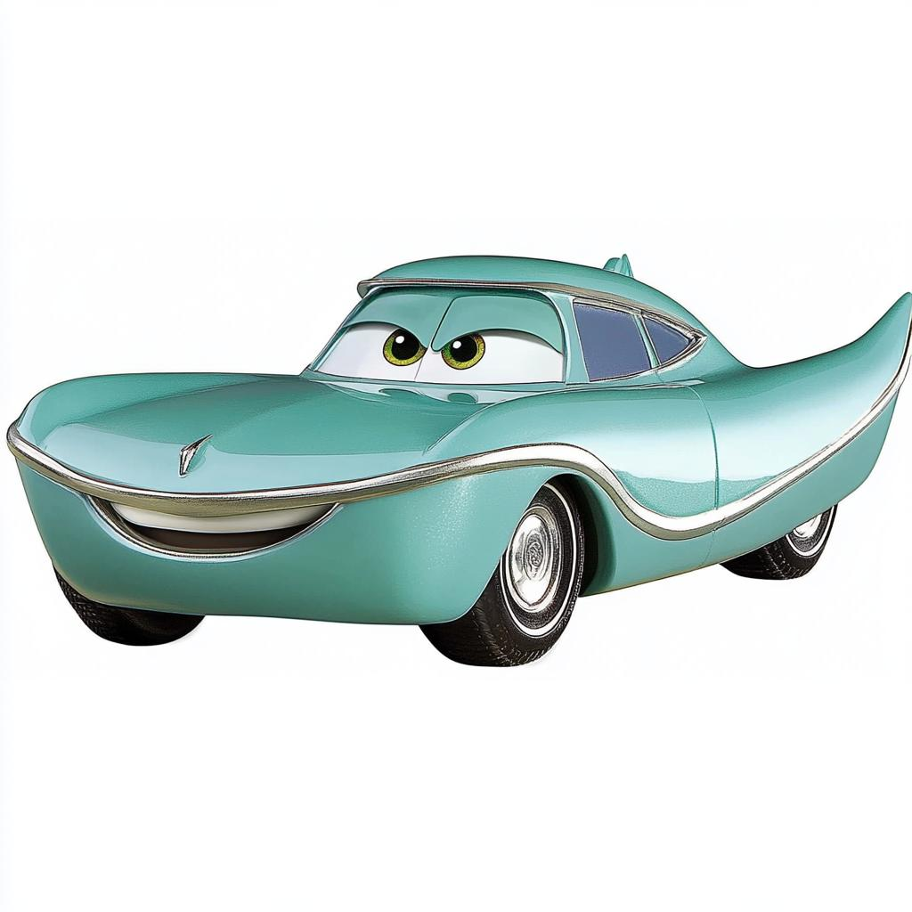
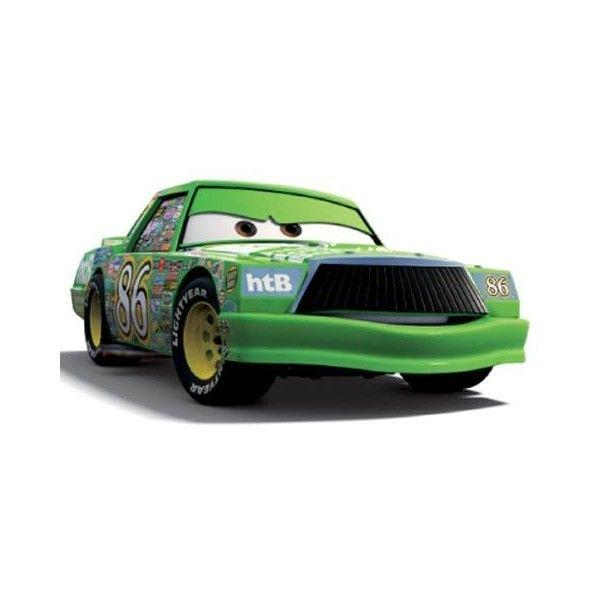
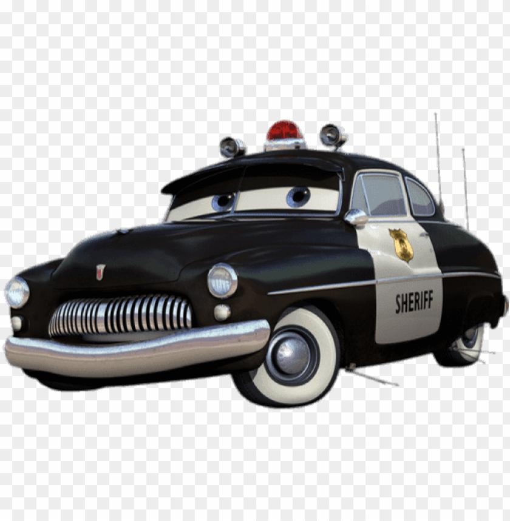
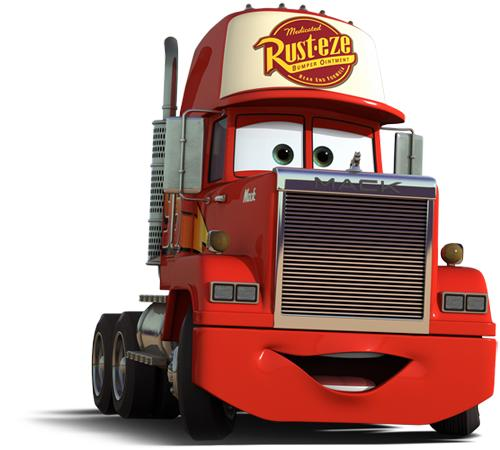

Mate
Películas: Cars 1, Cars 2 y Cars 3.
Es una grúa de color café que vive en Radiador Springs. Es divertido, espontáneo y muy leal. Su mejor amigo es Rayo McQueen.
Personalidad: Alegre, amable y valiente.
Conoce a los protagonistas de este increíble universo
Las películas de Cars cuentan con una gran variedad de personajes. Cada automóvil tiene una personalidad, una historia y características que lo hacen especial.
Desde el famoso Rayo McQueen hasta los habitantes de Radiador Springs, todos forman parte de un mundo donde la amistad, la aventura y la velocidad se encuentran.
Películas: Cars 1, Cars 2 y Cars 3.
Es una grúa de color café que vive en Radiador Springs. Es divertido, espontáneo y muy leal. Su mejor amigo es Rayo McQueen.
Personalidad: Alegre, amable y valiente.

Películas: Cars 1, Cars 2 y Cars 3.
Es un Porsche azul que vive en Radiador Springs. Ayuda a mantener vivo el pueblo y mantiene una relación especial con Rayo.
Personalidad: Inteligente y amable.

Película: Cars 1.
Es un Hudson Hornet que fue un famoso corredor. Con su experiencia ayuda a Rayo a comprender que ganar no lo es todo.
Personalidad: Sabio y reservado.

Películas: Cars 1, Cars 2 y Cars 3.
Es un pequeño automóvil italiano propietario de una tienda de neumáticos. Es un gran fanático de las carreras.
Personalidad: Entusiasta y amistoso.

Películas: Cars 1, Cars 2 y Cars 3.
Es el ayudante de Luigi y destaca por su increíble rapidez para cambiar neumáticos durante las carreras.
Personalidad: Leal y trabajador.

Película: Cars 3.
Es una entrenadora del centro de carreras Rust-eze. Ayuda a Rayo a prepararse para competir con los corredores modernos.
Personalidad: Optimista y decidida.

Película: Cars 3.
Es un automóvil de carreras de nueva generación. Su tecnología y velocidad representan un gran desafío para Rayo McQueen.
Personalidad: Competitivo y confiado.

Películas: Cars 1, Cars 2 y Cars 3.
Es un automóvil personalizado que tiene un taller de pintura en Radiador Springs. Le encanta cambiar de apariencia.
Personalidad: Creativo y tranquilo.

Películas: Cars 1, Cars 2 y Cars 3.
Es la propietaria del café V8 de Flo. Es una de las habitantes más conocidas de Radiador Springs.
Personalidad: Cariñosa y sociable.

Película: Cars 1.
Es uno de los competidores de Rayo McQueen en la Copa Pistón. Busca conseguir la victoria a toda costa.
Personalidad: Arrogante y competitivo.

Películas: Cars 1, Cars 2 y Cars 3.
Es el automóvil de policía de Radiador Springs. Se encarga de mantener el orden y cuidar a los habitantes.
Personalidad: Responsable y serio.

Películas: Cars 1, Cars 2 y Cars 3.
Es el camión transportador que lleva a Rayo McQueen a las competencias. Siempre está dispuesto a ayudarlo.
Personalidad: Paciente y confiable.
Cada personaje representa una característica importante de la historia. Algunos enseñan el valor de la amistad, otros muestran la importancia de la experiencia y otros representan la perseverancia.
Juntos construyen un universo donde cada automóvil tiene algo que aportar y donde las diferencias hacen que las aventuras sean más interesantes.